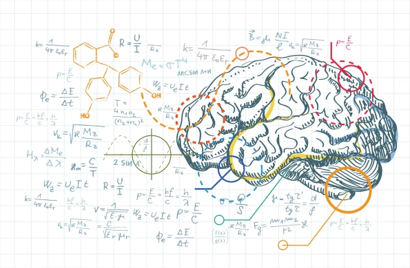

Natuurlijk zijn emoties niet altijd negatief en
dienen emoties niet altijd als antagonisten van het rationele
denken. Neuroloog Antonio Damasio benadrukt de rationaliteit van
emotie in zijn boek "Descartes’ Error" waarin hij het belang
van emoties in de besluitvorming benadrukt. Hij wijst erop dat
patiënten met hersenbeschadiging in het gebied in de hersenen
dat emotionele en cognitieve systemen integreert niet meer
effectief kunnen functioneren in de dagelijkse wereld, ook al zijn
hun geestelijke vermogens volkomen normaal. In de bestseller
"Emotional Intelligence" stelt Daniel Goleman dat de overheersende
visie op menselijke intelligentie als in
wezen hersenintellectueel veel te smal is, want het negeert een scala
van menselijke capaciteiten die in gelijke zo niet grotere mate
gewicht leggen in het bepalen van onze successen in het leven.
Coleman geeft zicht op een groot deel van het intelligentie-domein
dat over het hoofd gezien wordt, de zogenaamde 'emotionele
intelligentie', die is gebaseerd op eigenschappen als
zelfbewustzijn, motivatie, altruïsme en mededogen. Volgens
Goleman is een hoog "EQ" (emotioneel quotiënt ) evenveel of
zelfs meer bepalend dan een hoog IQ of mensen in de uitdagingen van
het leven uitblinken.
Vanuit de Integrale (met name Contemplatieve)
Psychologie bezien is emotie eigenlijk
aandacht; aandachtsenergie. De inhoud van de emotie kan simpel 'omslaan'
van bijvoorbeeld negatief naar positief.
Interessant is dat de groeiende professionele
gemeenschap rond het thema EQ zich (ook) steeds meer laat beperken
door zich te focussen op het brein. Begin 2014 kwam het jaarrapport
uit over 'de stand van zaken' m.b.t. de ontwikkeling van EQ. In de
definitie van EQ nog heel open: "Niet 'hart boven hoofd' of 'hoofd boven hart'
maar gebruik maken van onze volledige capaciteit - denken en voelen
integreren zodat we grootse resultaten
krijgen." Maar behalve in
de titel van het rapport (State of the Heart 2011-2014) en in de
definitie van EQ komt het hart op geen van de 26 pagina's van het
rapport voor. Maar dit plaatje hierna komt wel uit dat
rapport:

Het is daarmee wat mij betreft ook een gemiste
kans voor de internationale EQ-community*. Waar juist grote kansen
liggen om het hart (letterlijk) de juiste positie te geven. In het
hele EQ gedachtengoed verwijst de professionele EQ gemeenschap
conformistisch, main stream, old school, netjes naar ... het brein.
Punt. Wat wel degelijk een interessant handvat kan worden in het
bredere plaatje is het zogenaamde Six Seconds Model van emotionele
intelligentie. Het geeft acht belangrijke competenties weer die op
drie zogenaamde 'belangrijke strevens' (pursuits) om de integratie
van denken (brein) en voelen (hart) te verbeteren en in de praktijk
te brengen:
|
Streven
|
Competentie
|
Definitie
|
|
Ken Jezelf (Zelfkennis)
|
Emotionele Geletterdheid
|
Accuraat identificeren en interpreteren van zowel
simpele als samengestelde gevoelens
|
|
|
Patronen Herkennen
|
Erkennen van regelmatig terugkerende reacties en
gedragingen.
|
|
Kies Jezelf
(Zelfmanagement)
|
Denken in gevolgen toepassen
|
Evalueren van kosten en opbrengsten van je
keuzes.
|
|
|
Emoties navigeren
|
Het beoordelen, benutten en omzetten van emoties
als een strategische hulpbron.
|
|
|
Betrekken van Intrinsieke
Motivatie
|
Extra energie krijgen uit persoonlijke waarden
& verbintenissen tegenover gedreven worden door externe
krachten.
|
|
|
Optimisme beoefenen
|
Het benaderen vanuit een proactief perspectief
van hoop en mogelijkheden.
|
|
Geef
Jezelf
|
Empathie vermeerderen
|
Herkennen en adequaat reageren op emoties van
anderen.
|
|
|
Nobele Doelen nastreven
|
Verbinden van je dagelijkse keuzes met
overkoepelend gevoel van zinvolheid.
|
_______________________________
* De hoofdstelling uit mijn dissertatie
was/is: "Alle gedrag is geworteld in emotie".